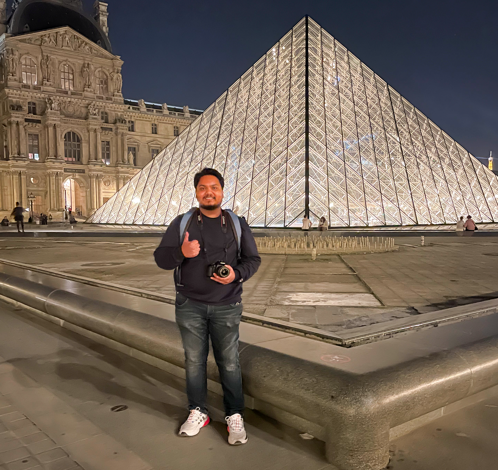

|
Animesh Karnewar I am a completing Ph.D. student at UCL, London and a Visiting Researcher at Meta GenAI research, London. I am a recepient of the prestigious Marie Curie Fellowship for my PhD. My research titled "Towards Computationally Efficient, Photo-realistic, Large-scale, 3D Generative Modelling" is supervised by Prof. Niloy J. Mitra and Prof. Tobias Ritschel. I have collaborated with Oliver Wang from Adobe Research during my PhD; and with David Novotny and Prof. Andrea Vedaldi from Meta GenAI London during a research scientist internship and as a Visiting Researcher. Prior to this I worked as an R&D Engineer at TomTom, Amsterdam. I have done my Bachelors in Computer Science from PICT Pune, as a university topper with 4.0/4.0 GPA. Apart from this, I am a movie lover and an exploratory-casual-gamer and a hobbyist photographer. Feel free to check out my photography work on Instagram: @akanimax3. Google Scholar / Twitter / Github / YouTube / Medium |
 |
{kind=link}
{kind=link}
{kind=link}
{kind=link}
ResearchI am currently interested in research on applying Generative Modelling in a scalable and efficient manner to large-scale static 3D assets geared specifically towards creative 3D applications like Movies and Video Games. Other interests include Physically based rendering, Differentiable rendering and efficient 3D representations. |

|
GOEnFusion: Gradient Origin Encodings for 3D Forward Diffusion Models
Animesh Karnewar, Andrea Vedaldi, Niloy J. Mitra, David Novotny arXiv, 2023 project page / arXiv We propose the GOEn (Gradient Origin Encoding) that encodes source views (observations) into arbitrary 3D Radiance-Field representations while trying to maximize the transfer of source information. GOEn encodings can be used in the context of 3D diffusion-with-forward models (our proposed GOEnFusion) and for regression-based 3D reconstruction. |

|
HoloFusion: Towards Photo-realistic 3D Generative Modeling
Animesh Karnewar, Niloy J. Mitra, Andrea Vedaldi, David Novotny ICCV, 2023 project page / video / arXiv We propose HoloFusion to generate photo-realistic 3D radiance fields by extending the HoloDiffusion method with a jointly trained 2D 'super resolution' network. The independently super-resolved images are fused back into the 3D representation to improve the fidelity of the 3D model via distillation, while preserving the consistency across view changes. |
Academic service
Reviewer at ICCV/ECCV since 2021
|
Teaching and Research Talks
TA for MLVC course UCL 2022
|
{kind=link}
|
"The simplest solution is almost always the best." - William of Ockham |